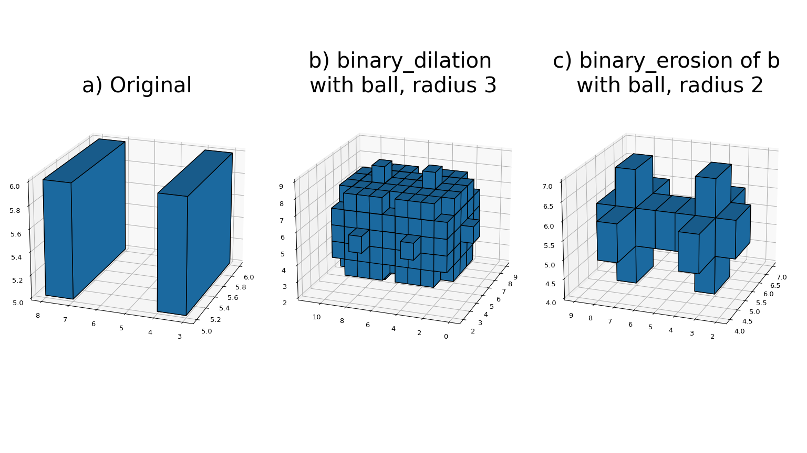

Image processing and analysis are generally seen as operations on
2-D arrays of values. There are, however, a number of
fields where images of higher dimensionality must be analyzed. Good
examples of these are medical imaging and biological imaging.
numpy is suited very well for this type of applications due to
its inherent multidimensional nature. The scipy.ndimage
packages provides a number of general image processing and analysis
functions that are designed to operate with arrays of arbitrary
dimensionality. The packages currently includes: functions for
linear and non-linear filtering, binary morphology, B-spline
interpolation, and object measurements.
All functions share some common properties. Notably, all functions
allow the specification of an output array with the output
argument. With this argument, you can specify an array that will be
changed in-place with the result with the operation. In this case,
the result is not returned. Usually, using the output argument is
more efficient, since an existing array is used to store the
result.
The type of arrays returned is dependent on the type of operation,
but it is, in most cases, equal to the type of the input. If,
however, the output argument is used, the type of the result is
equal to the type of the specified output argument. If no output
argument is given, it is still possible to specify what the result
of the output should be. This is done by simply assigning the
desired numpy type object to the output argument. For example:
The functions described in this section all perform some type of spatial
filtering of the input array: the elements in the output are some function
of the values in the neighborhood of the corresponding input element. We refer
to this neighborhood of elements as the filter kernel, which is often
rectangular in shape but may also have an arbitrary footprint. Many
of the functions described below allow you to define the footprint
of the kernel by passing a mask through the footprint parameter.
For example, a cross-shaped kernel can be defined as follows:
Usually, the origin of the kernel is at the center calculated by
dividing the dimensions of the kernel shape by two. For instance,
the origin of a 1-D kernel of length three is at the
second element. Take, for example, the correlation of a
1-D array with a filter of length 3 consisting of
ones:
Sometimes, it is convenient to choose a different origin for the
kernel. For this reason, most functions support the origin
parameter, which gives the origin of the filter relative to its
center. For example:
The effect is a shift of the result towards the left. This feature
will not be needed very often, but it may be useful, especially for
filters that have an even size. A good example is the calculation
of backward and forward differences:
However, using the origin parameter instead of a larger kernel is
more efficient. For multidimensional kernels, origin can be a
number, in which case the origin is assumed to be equal along all
axes, or a sequence giving the origin along each axis.
Since the output elements are a function of elements in the
neighborhood of the input elements, the borders of the array need to
be dealt with appropriately by providing the values outside the
borders. This is done by assuming that the arrays are extended beyond
their boundaries according to certain boundary conditions. In the
functions described below, the boundary conditions can be selected
using the mode parameter, which must be a string with the name of the
boundary condition. The following boundary conditions are currently
supported:
mode
description
example
“nearest”
use the value at the boundary
[1 2 3]->[1 1 2 3 3]
“wrap”
periodically replicate the array
[1 2 3]->[3 1 2 3 1]
“reflect”
reflect the array at the boundary
[1 2 3]->[1 1 2 3 3]
“mirror”
mirror the array at the boundary
[1 2 3]->[2 1 2 3 2]
“constant”
use a constant value, default is 0.0
[1 2 3]->[0 1 2 3 0]
The following synonyms are also supported for consistency with the
interpolation routines:
mode
description
“grid-constant”
equivalent to “constant”*
“grid-mirror”
equivalent to “reflect”
“grid-wrap”
equivalent to “wrap”
* “grid-constant” and “constant” are equivalent for filtering operations, but
have different behavior in interpolation functions. For API consistency, the
filtering functions accept either name.
The “constant” mode is special since it needs an additional parameter to
specify the constant value that should be used.
Note that modes mirror and reflect differ only in whether the sample at the
boundary is repeated upon reflection. For mode mirror, the point of symmetry is
exactly at the final sample, so that value is not repeated. This mode is also
known as whole-sample symmetric since the point of symmetry falls on the final
sample. Similarly, reflect is often referred to as half-sample symmetric as the
point of symmetry is half a sample beyond the array boundary.
Note
The easiest way to implement such boundary conditions would be to
copy the data to a larger array and extend the data at the borders
according to the boundary conditions. For large arrays and large
filter kernels, this would be very memory consuming, and the
functions described below, therefore, use a different approach that
does not require allocating large temporary buffers.
The correlate1d function calculates a 1-D
correlation along the given axis. The lines of the array along the
given axis are correlated with the given weights. The weights
parameter must be a 1-D sequence of numbers.
The function correlate implements multidimensional
correlation of the input array with a given kernel.
The convolve1d function calculates a 1-D
convolution along the given axis. The lines of the array along the
given axis are convoluted with the given weights. The weights
parameter must be a 1-D sequence of numbers.
The function convolve implements multidimensional
convolution of the input array with a given kernel.
Note
A convolution is essentially a correlation after mirroring the
kernel. As a result, the origin parameter behaves differently
than in the case of a correlation: the results is shifted in the
opposite direction.
The gaussian_filter1d function implements a 1-D
Gaussian filter. The standard deviation of the Gaussian filter is
passed through the parameter sigma. Setting order = 0
corresponds to convolution with a Gaussian kernel. An order of 1, 2,
or 3 corresponds to convolution with the first, second, or third
derivatives of a Gaussian. Higher-order derivatives are not
implemented.
The gaussian_filter function implements a multidimensional
Gaussian filter. The standard deviations of the Gaussian filter
along each axis are passed through the parameter sigma as a
sequence or numbers. If sigma is not a sequence but a single
number, the standard deviation of the filter is equal along all
directions. The order of the filter can be specified separately for
each axis. An order of 0 corresponds to convolution with a Gaussian
kernel. An order of 1, 2, or 3 corresponds to convolution with the
first, second, or third derivatives of a Gaussian. Higher-order
derivatives are not implemented. The order parameter must be a
number, to specify the same order for all axes, or a sequence of
numbers to specify a different order for each axis. The example below
shows the filter applied on test data with different values of sigma.
The order parameter is kept at 0.
Note
The multidimensional filter is implemented as a sequence of
1-D Gaussian filters. The intermediate arrays are
stored in the same data type as the output. Therefore, for
output types with a lower precision, the results may be imprecise
because intermediate results may be stored with insufficient
precision. This can be prevented by specifying a more precise
output type.
The uniform_filter1d function calculates a 1-D
uniform filter of the given size along the given axis.
The uniform_filter implements a multidimensional uniform
filter. The sizes of the uniform filter are given for each axis as a
sequence of integers by the size parameter. If size is not a
sequence, but a single number, the sizes along all axes are assumed
to be equal.
Note
The multidimensional filter is implemented as a sequence of
1-D uniform filters. The intermediate arrays are
stored in the same data type as the output. Therefore, for output
types with a lower precision, the results may be imprecise
because intermediate results may be stored with insufficient
precision. This can be prevented by specifying a more precise
output type.
The minimum_filter1d function calculates a 1-D
minimum filter of the given size along the given axis.
The maximum_filter1d function calculates a 1-D
maximum filter of the given size along the given axis.
The minimum_filter function calculates a multidimensional
minimum filter. Either the sizes of a rectangular kernel or the
footprint of the kernel must be provided. The size parameter, if
provided, must be a sequence of sizes or a single number, in which
case the size of the filter is assumed to be equal along each axis.
The footprint, if provided, must be an array that defines the
shape of the kernel by its non-zero elements.
The maximum_filter function calculates a multidimensional
maximum filter. Either the sizes of a rectangular kernel or the
footprint of the kernel must be provided. The size parameter, if
provided, must be a sequence of sizes or a single number, in which
case the size of the filter is assumed to be equal along each axis.
The footprint, if provided, must be an array that defines the
shape of the kernel by its non-zero elements.
The rank_filter function calculates a multidimensional rank
filter. The rank may be less than zero, i.e., rank = -1
indicates the largest element. Either the sizes of a rectangular
kernel or the footprint of the kernel must be provided. The size
parameter, if provided, must be a sequence of sizes or a single
number, in which case the size of the filter is assumed to be equal
along each axis. The footprint, if provided, must be an array that
defines the shape of the kernel by its non-zero elements.
The percentile_filter function calculates a multidimensional
percentile filter. The percentile may be less than zero, i.e.,
percentile = -20 equals percentile = 80. Either the sizes of a
rectangular kernel or the footprint of the kernel must be provided.
The size parameter, if provided, must be a sequence of sizes or a
single number, in which case the size of the filter is assumed to be
equal along each axis. The footprint, if provided, must be an
array that defines the shape of the kernel by its non-zero elements.
The median_filter function calculates a multidimensional
median filter. Either the sizes of a rectangular kernel or the
footprint of the kernel must be provided. The size parameter, if
provided, must be a sequence of sizes or a single number, in which
case the size of the filter is assumed to be equal along each
axis. The footprint if provided, must be an array that defines the
shape of the kernel by its non-zero elements.
Derivative filters can be constructed in several ways. The function
gaussian_filter1d, described in
Smoothing filters, can be used to calculate
derivatives along a given axis using the order parameter. Other
derivative filters are the Prewitt and Sobel filters:
The prewitt function calculates a derivative along the given
axis.
The sobel function calculates a derivative along the given
axis.
The Laplace filter is calculated by the sum of the second derivatives
along all axes. Thus, different Laplace filters can be constructed
using different second-derivative functions. Therefore, we provide a
general function that takes a function argument to calculate the
second derivative along a given direction.
The function generic_laplace calculates a Laplace filter
using the function passed through derivative2 to calculate
second derivatives. The function derivative2 should have the
following signature
It should calculate the second derivative along the dimension
axis. If output is not None, it should use that for the
output and return None, otherwise it should return the
result. mode, cval have the usual meaning.
The extra_arguments and extra_keywords arguments can be used
to pass a tuple of extra arguments and a dictionary of named
arguments that are passed to derivative2 at each call.
The following two functions are implemented using
generic_laplace by providing appropriate functions for the
second-derivative function:
The function laplace calculates the Laplace using discrete
differentiation for the second derivative (i.e., convolution with
[1,-2,1]).
The function gaussian_laplace calculates the Laplace filter
using gaussian_filter to calculate the second
derivatives. The standard deviations of the Gaussian filter along
each axis are passed through the parameter sigma as a sequence or
numbers. If sigma is not a sequence but a single number, the
standard deviation of the filter is equal along all directions.
The gradient magnitude is defined as the square root of the sum of the
squares of the gradients in all directions. Similar to the generic
Laplace function, there is a generic_gradient_magnitude
function that calculates the gradient magnitude of an array.
The function generic_gradient_magnitude calculates a
gradient magnitude using the function passed through
derivative to calculate first derivatives. The function
derivative should have the following signature
It should calculate the derivative along the dimension axis. If
output is not None, it should use that for the output and return
None, otherwise it should return the result. mode, cval have the
usual meaning.
The extra_arguments and extra_keywords arguments can be used to
pass a tuple of extra arguments and a dictionary of named arguments
that are passed to derivative at each call.
For example, the sobel function fits the required signature
The function gaussian_gradient_magnitude calculates the
gradient magnitude using gaussian_filter to calculate the
first derivatives. The standard deviations of the Gaussian filter
along each axis are passed through the parameter sigma as a
sequence or numbers. If sigma is not a sequence but a single
number, the standard deviation of the filter is equal along all
directions.
To implement filter functions, generic functions can be used that
accept a callable object that implements the filtering operation. The
iteration over the input and output arrays is handled by these generic
functions, along with such details as the implementation of the
boundary conditions. Only a callable object implementing a callback
function that does the actual filtering work must be provided. The
callback function can also be written in C and passed using a
PyCapsule (see Extending scipy.ndimage in C for more
information).
The generic_filter1d function implements a generic
1-D filter function, where the actual filtering
operation must be supplied as a python function (or other callable
object). The generic_filter1d function iterates over the
lines of an array and calls function at each line. The
arguments that are passed to function are 1-D
arrays of the numpy.float64 type. The first contains the values
of the current line. It is extended at the beginning and the end,
according to the filter_size and origin arguments. The second
array should be modified in-place to provide the output values of
the line. For example, consider a correlation along one dimension:
Here, the origin of the kernel was (by default) assumed to be in the
middle of the filter of length 3. Therefore, each input line had been
extended by one value at the beginning and at the end, before the
function was called.
Optionally, extra arguments can be defined and passed to the filter
function. The extra_arguments and extra_keywords arguments can
be used to pass a tuple of extra arguments and/or a dictionary of
named arguments that are passed to derivative at each call. For
example, we can pass the parameters of our filter as an argument
The generic_filter function implements a generic filter
function, where the actual filtering operation must be supplied as a
python function (or other callable object). The
generic_filter function iterates over the array and calls
function at each element. The argument of function
is a 1-D array of the numpy.float64 type that
contains the values around the current element that are within the
footprint of the filter. The function should return a single value
that can be converted to a double precision number. For example,
consider a correlation:
Here, a kernel footprint was specified that contains only two
elements. Therefore, the filter function receives a buffer of length
equal to two, which was multiplied with the proper weights and the
result summed.
When calling generic_filter, either the sizes of a
rectangular kernel or the footprint of the kernel must be
provided. The size parameter, if provided, must be a sequence of
sizes or a single number, in which case the size of the filter is
assumed to be equal along each axis. The footprint, if provided,
must be an array that defines the shape of the kernel by its
non-zero elements.
Optionally, extra arguments can be defined and passed to the filter
function. The extra_arguments and extra_keywords arguments can
be used to pass a tuple of extra arguments and/or a dictionary of
named arguments that are passed to derivative at each call. For
example, we can pass the parameters of our filter as an argument
These functions iterate over the lines or elements starting at the
last axis, i.e., the last index changes the fastest. This order of
iteration is guaranteed for the case that it is important to adapt the
filter depending on spatial location. Here is an example of using a
class that implements the filter and keeps track of the current
coordinates while iterating. It performs the same filter operation as
described above for generic_filter, but additionally prints
the current coordinates:
For the generic_filter1d function, the same approach works,
except that this function does not iterate over the axis that is being
filtered. The example for generic_filter1d then becomes this:
>>> a=np.arange(12).reshape(3,4)>>>>>> classfnc1d_class:... def__init__(self,shape,axis=-1):... # store the filter axis:... self.axis=axis... # store the shape:... self.shape=shape... # initialize the coordinates:... self.coordinates=[0]*len(shape)...... deffilter(self,iline,oline):... oline[...]=iline[:-2]+2*iline[1:-1]+3*iline[2:]... print(self.coordinates)... # calculate the next coordinates:... axes=list(range(len(self.shape)))... # skip the filter axis:... delaxes[self.axis]... axes.reverse()... forjjinaxes:... ifself.coordinates[jj]<self.shape[jj]-1:... self.coordinates[jj]+=1... break... else:... self.coordinates[jj]=0...>>> fnc=fnc1d_class(shape=(3,4))>>> generic_filter1d(a,fnc.filter,3)[0, 0][1, 0][2, 0]array([[ 3, 8, 14, 17], [27, 32, 38, 41], [51, 56, 62, 65]])
The functions described in this section perform filtering
operations in the Fourier domain. Thus, the input array of such a
function should be compatible with an inverse Fourier transform
function, such as the functions from the numpy.fft module. We,
therefore, have to deal with arrays that may be the result of a real
or a complex Fourier transform. In the case of a real Fourier
transform, only half of the of the symmetric complex transform is
stored. Additionally, it needs to be known what the length of the
axis was that was transformed by the real fft. The functions
described here provide a parameter n that, in the case of a real
transform, must be equal to the length of the real transform axis
before transformation. If this parameter is less than zero, it is
assumed that the input array was the result of a complex Fourier
transform. The parameter axis can be used to indicate along which
axis the real transform was executed.
The fourier_shift function multiplies the input array with
the multidimensional Fourier transform of a shift operation for the
given shift. The shift parameter is a sequence of shifts for each
dimension or a single value for all dimensions.
The fourier_gaussian function multiplies the input array
with the multidimensional Fourier transform of a Gaussian filter
with given standard deviations sigma. The sigma parameter is a
sequence of values for each dimension or a single value for all
dimensions.
The fourier_uniform function multiplies the input array with
the multidimensional Fourier transform of a uniform filter with
given sizes size. The size parameter is a sequence of values
for each dimension or a single value for all dimensions.
The fourier_ellipsoid function multiplies the input array
with the multidimensional Fourier transform of an elliptically-shaped
filter with given sizes size. The size parameter is a sequence
of values for each dimension or a single value for all dimensions.
This function is only implemented for dimensions 1, 2, and 3.
This section describes various interpolation functions that are based
on B-spline theory. A good introduction to B-splines can be found
in [1] with detailed algorithms for image interpolation given in [5].
Interpolation using splines of an order larger than 1 requires a
pre-filtering step. The interpolation functions described in section
Interpolation functions apply pre-filtering by calling
spline_filter, but they can be instructed not to do this by
setting the prefilter keyword equal to False. This is useful if more
than one interpolation operation is done on the same array. In this
case, it is more efficient to do the pre-filtering only once and use a
pre-filtered array as the input of the interpolation functions. The
following two functions implement the pre-filtering:
The spline_filter1d function calculates a 1-D
spline filter along the given axis. An output array can optionally
be provided. The order of the spline must be larger than 1 and less
than 6.
The spline_filter function calculates a multidimensional
spline filter.
Note
The multidimensional filter is implemented as a sequence of
1-D spline filters. The intermediate arrays are
stored in the same data type as the output. Therefore, if an
output with a limited precision is requested, the results may be
imprecise because intermediate results may be stored with
insufficient precision. This can be prevented by specifying a
output type of high precision.
The interpolation functions all employ spline interpolation to effect some
type of geometric transformation of the input array. This requires a
mapping of the output coordinates to the input coordinates, and
therefore, the possibility arises that input values outside the
boundaries may be needed. This problem is solved in the same way as
described in Filter functions for the multidimensional
filter functions. Therefore, these functions all support a mode
parameter that determines how the boundaries are handled, and a cval
parameter that gives a constant value in case that the ‘constant’ mode
is used. The behavior of all modes, including at non-integer locations is
illustrated below. Note the boundaries are not handled the same for all modes;
reflect (aka grid-mirror) and grid-wrap involve symmetry or repetition
about a point that is half way between image samples (dashed vertical lines)
while modes mirror and wrap treat the image as if it’s extent ends exactly
at the first and last sample point rather than 0.5 samples past it.
The coordinates of image samples fall on integer sampling locations
in the range from 0 to shape[i]-1 along each axis, i. The figure
below illustrates the interpolation of a point at location (3.7,3.3)
within an image of shape (7,7). For an interpolation of order n,
n+1 samples are involved along each axis. The filled circles
illustrate the sampling locations involved in the interpolation of the value at
the location of the red x.
The geometric_transform function applies an arbitrary
geometric transform to the input. The given mapping function is
called at each point in the output to find the corresponding
coordinates in the input. mapping must be a callable object that
accepts a tuple of length equal to the output array rank and returns
the corresponding input coordinates as a tuple of length equal to
the input array rank. The output shape and output type can
optionally be provided. If not given, they are equal to the input
shape and type.
Optionally, extra arguments can be defined and passed to the filter
function. The extra_arguments and extra_keywords arguments can
be used to pass a tuple of extra arguments and/or a dictionary of
named arguments that are passed to derivative at each call. For
example, we can pass the shifts in our example as arguments
The function map_coordinates applies an arbitrary coordinate
transformation using the given array of coordinates. The shape of
the output is derived from that of the coordinate array by dropping
the first axis. The parameter coordinates is used to find for each
point in the output the corresponding coordinates in the input. The
values of coordinates along the first axis are the coordinates in
the input array at which the output value is found. (See also the
numarray coordinates function.) Since the coordinates may be non-
integer coordinates, the value of the input at these coordinates is
determined by spline interpolation of the requested order.
Here is an example that interpolates a 2D array at (0.5,0.5) and
(1,2):
The affine_transform function applies an affine
transformation to the input array. The given transformation matrix
and offset are used to find for each point in the output the
corresponding coordinates in the input. The value of the input at
the calculated coordinates is determined by spline interpolation of
the requested order. The transformation matrix must be
2-D or can also be given as a 1-D sequence
or array. In the latter case, it is assumed that the matrix is
diagonal. A more efficient interpolation algorithm is then applied
that exploits the separability of the problem. The output shape and
output type can optionally be provided. If not given, they are equal
to the input shape and type.
The shift function returns a shifted version of the input,
using spline interpolation of the requested order.
The zoom function returns a rescaled version of the input,
using spline interpolation of the requested order.
The rotate function returns the input array rotated in the
plane defined by the two axes given by the parameter axes, using
spline interpolation of the requested order. The angle must be
given in degrees. If reshape is true, then the size of the output
array is adapted to contain the rotated input.
The generate_binary_structure functions generates a binary
structuring element for use in binary morphology operations. The
rank of the structure must be provided. The size of the structure
that is returned is equal to three in each direction. The value of
each element is equal to one if the square of the Euclidean distance
from the element to the center is less than or equal to
connectivity. For instance, 2-D 4-connected and
8-connected structures are generated as follows:
Most binary morphology functions can be expressed in terms of the
basic operations erosion and dilation, which can be seen here:

The binary_erosion function implements binary erosion of
arrays of arbitrary rank with the given structuring element. The
origin parameter controls the placement of the structuring element,
as described in Filter functions. If no structuring
element is provided, an element with connectivity equal to one is
generated using generate_binary_structure. The
border_value parameter gives the value of the array outside
boundaries. The erosion is repeated iterations times. If
iterations is less than one, the erosion is repeated until the
result does not change anymore. If a mask array is given, only
those elements with a true value at the corresponding mask element
are modified at each iteration.
The binary_dilation function implements binary dilation of
arrays of arbitrary rank with the given structuring element. The
origin parameter controls the placement of the structuring element,
as described in Filter functions. If no structuring
element is provided, an element with connectivity equal to one is
generated using generate_binary_structure. The
border_value parameter gives the value of the array outside
boundaries. The dilation is repeated iterations times. If
iterations is less than one, the dilation is repeated until the
result does not change anymore. If a mask array is given, only
those elements with a true value at the corresponding mask element
are modified at each iteration.
Here is an example of using binary_dilation to find all elements
that touch the border, by repeatedly dilating an empty array from
the border using the data array as the mask:
The binary_erosion and binary_dilation functions both
have an iterations parameter, which allows the erosion or dilation to
be repeated a number of times. Repeating an erosion or a dilation with
a given structure n times is equivalent to an erosion or a dilation
with a structure that is n-1 times dilated with itself. A function
is provided that allows the calculation of a structure that is dilated
a number of times with itself:
The iterate_structure function returns a structure by dilation
of the input structure iteration - 1 times with itself.
For instance:
>>> struct=generate_binary_structure(2,1)>>> structarray([[False, True, False], [ True, True, True], [False, True, False]], dtype=bool)>>> fromscipy.ndimageimportiterate_structure>>> iterate_structure(struct,2)array([[False, False, True, False, False], [False, True, True, True, False], [ True, True, True, True, True], [False, True, True, True, False], [False, False, True, False, False]], dtype=bool)If the origin of the original structure is equal to 0, then it isalso equal to 0 for the iterated structure. If not, the originmust also be adapted if the equivalent of the *iterations*erosions or dilations must be achieved with the iteratedstructure. The adapted origin is simply obtained by multiplyingwith the number of iterations. For convenience, the:func:`iterate_structure` also returns the adapted origin if the*origin* parameter is not ``None``:.. code:: python >>> iterate_structure(struct, 2, -1) (array([[False, False, True, False, False], [False, True, True, True, False], [ True, True, True, True, True], [False, True, True, True, False], [False, False, True, False, False]], dtype=bool), [-2, -2])
Other morphology operations can be defined in terms of erosion and
dilation. The following functions provide a few of these operations
for convenience:
The binary_opening function implements binary opening of
arrays of arbitrary rank with the given structuring element. Binary
opening is equivalent to a binary erosion followed by a binary
dilation with the same structuring element. The origin parameter
controls the placement of the structuring element, as described in
Filter functions. If no structuring element is
provided, an element with connectivity equal to one is generated
using generate_binary_structure. The iterations parameter
gives the number of erosions that is performed followed by the same
number of dilations.
The binary_closing function implements binary closing of
arrays of arbitrary rank with the given structuring element. Binary
closing is equivalent to a binary dilation followed by a binary
erosion with the same structuring element. The origin parameter
controls the placement of the structuring element, as described in
Filter functions. If no structuring element is
provided, an element with connectivity equal to one is generated
using generate_binary_structure. The iterations parameter
gives the number of dilations that is performed followed by the same
number of erosions.
The binary_fill_holes function is used to close holes in
objects in a binary image, where the structure defines the
connectivity of the holes. The origin parameter controls the
placement of the structuring element, as described in
Filter functions. If no structuring element is
provided, an element with connectivity equal to one is generated
using generate_binary_structure.
The binary_hit_or_miss function implements a binary
hit-or-miss transform of arrays of arbitrary rank with the given
structuring elements. The hit-or-miss transform is calculated by
erosion of the input with the first structure, erosion of the
logical not of the input with the second structure, followed by
the logical and of these two erosions. The origin parameters
control the placement of the structuring elements, as described in
Filter functions. If origin2 equals None, it is set
equal to the origin1 parameter. If the first structuring element
is not provided, a structuring element with connectivity equal to
one is generated using generate_binary_structure. If
structure2 is not provided, it is set equal to the logical not
of structure1.
Grey-scale morphology operations are the equivalents of binary
morphology operations that operate on arrays with arbitrary values.
Below, we describe the grey-scale equivalents of erosion, dilation,
opening and closing. These operations are implemented in a similar
fashion as the filters described in Filter functions,
and we refer to this section for the description of filter kernels and
footprints, and the handling of array borders. The grey-scale
morphology operations optionally take a structure parameter that
gives the values of the structuring element. If this parameter is not
given, the structuring element is assumed to be flat with a value equal
to zero. The shape of the structure can optionally be defined by the
footprint parameter. If this parameter is not given, the structure
is assumed to be rectangular, with sizes equal to the dimensions of
the structure array, or by the size parameter if structure is
not given. The size parameter is only used if both structure and
footprint are not given, in which case the structuring element is
assumed to be rectangular and flat with the dimensions given by
size. The size parameter, if provided, must be a sequence of sizes
or a single number in which case the size of the filter is assumed to
be equal along each axis. The footprint parameter, if provided, must
be an array that defines the shape of the kernel by its non-zero
elements.
Similarly to binary erosion and dilation, there are operations for
grey-scale erosion and dilation:
The grey_erosion function calculates a multidimensional
grey-scale erosion.
The grey_dilation function calculates a multidimensional
grey-scale dilation.
Grey-scale opening and closing operations can be defined similarly to
their binary counterparts:
The grey_opening function implements grey-scale opening of
arrays of arbitrary rank. Grey-scale opening is equivalent to a
grey-scale erosion followed by a grey-scale dilation.
The grey_closing function implements grey-scale closing of
arrays of arbitrary rank. Grey-scale opening is equivalent to a
grey-scale dilation followed by a grey-scale erosion.
The morphological_gradient function implements a grey-scale
morphological gradient of arrays of arbitrary rank. The grey-scale
morphological gradient is equal to the difference of a grey-scale
dilation and a grey-scale erosion.
The morphological_laplace function implements a grey-scale
morphological laplace of arrays of arbitrary rank. The grey-scale
morphological laplace is equal to the sum of a grey-scale dilation
and a grey-scale erosion minus twice the input.
The white_tophat function implements a white top-hat filter
of arrays of arbitrary rank. The white top-hat is equal to the
difference of the input and a grey-scale opening.
The black_tophat function implements a black top-hat filter
of arrays of arbitrary rank. The black top-hat is equal to the
difference of a grey-scale closing and the input.
Distance transforms are used to calculate the minimum distance from
each element of an object to the background. The following functions
implement distance transforms for three different distance metrics:
Euclidean, city block, and chessboard distances.
The function distance_transform_cdt uses a chamfer type
algorithm to calculate the distance transform of the input, by
replacing each object element (defined by values larger than zero)
with the shortest distance to the background (all non-object
elements). The structure determines the type of chamfering that is
done. If the structure is equal to ‘cityblock’, a structure is
generated using generate_binary_structure with a squared
distance equal to 1. If the structure is equal to ‘chessboard’, a
structure is generated using generate_binary_structure with
a squared distance equal to the rank of the array. These choices
correspond to the common interpretations of the city block and the
chessboard distance metrics in two dimensions.
In addition to the distance transform, the feature transform can be
calculated. In this case, the index of the closest background element
is returned along the first axis of the result. The
return_distances, and return_indices flags can be used to
indicate if the distance transform, the feature transform, or both
must be returned.
The distances and indices arguments can be used to give optional
output arrays that must be of the correct size and type (both
numpy.int32). The basics of the algorithm used to implement this
function are described in [2].
The function distance_transform_edt calculates the exact
Euclidean distance transform of the input, by replacing each object
element (defined by values larger than zero) with the shortest
Euclidean distance to the background (all non-object elements).
In addition to the distance transform, the feature transform can be
calculated. In this case, the index of the closest background element
is returned along the first axis of the result. The
return_distances and return_indices flags can be used to
indicate if the distance transform, the feature transform, or both
must be returned.
Optionally, the sampling along each axis can be given by the
sampling parameter, which should be a sequence of length equal to
the input rank, or a single number in which the sampling is assumed
to be equal along all axes.
The distances and indices arguments can be used to give optional
output arrays that must be of the correct size and type
(numpy.float64 and numpy.int32).The algorithm used to
implement this function is described in [3].
The function distance_transform_bf uses a brute-force
algorithm to calculate the distance transform of the input, by
replacing each object element (defined by values larger than zero)
with the shortest distance to the background (all non-object
elements). The metric must be one of “euclidean”, “cityblock”, or
“chessboard”.
In addition to the distance transform, the feature transform can be
calculated. In this case, the index of the closest background element
is returned along the first axis of the result. The
return_distances and return_indices flags can be used to
indicate if the distance transform, the feature transform, or both
must be returned.
Optionally, the sampling along each axis can be given by the
sampling parameter, which should be a sequence of length equal to
the input rank, or a single number in which the sampling is assumed
to be equal along all axes. This parameter is only used in the case
of the Euclidean distance transform.
The distances and indices arguments can be used to give optional
output arrays that must be of the correct size and type
(numpy.float64 and numpy.int32).
Note
This function uses a slow brute-force algorithm, the function
distance_transform_cdt can be used to more efficiently
calculate city block and chessboard distance transforms. The
function distance_transform_edt can be used to more
efficiently calculate the exact Euclidean distance transform.
Segmentation is the process of separating objects of interest from
the background. The most simple approach is, probably, intensity
thresholding, which is easily done with numpy functions:
The result is a binary image, in which the individual objects still
need to be identified and labeled. The function label
generates an array where each object is assigned a unique number:
The label function generates an array where the objects in
the input are labeled with an integer index. It returns a tuple
consisting of the array of object labels and the number of objects
found, unless the output parameter is given, in which case only
the number of objects is returned. The connectivity of the objects
is defined by a structuring element. For instance, in 2D
using a 4-connected structuring element gives:
These two objects are not connected because there is no way in which
we can place the structuring element, such that it overlaps with both
objects. However, an 8-connected structuring element results in only
a single object:
If no structuring element is provided, one is generated by calling
generate_binary_structure (see
Binary morphology) using a connectivity of one (which
in 2D is the 4-connected structure of the first example). The input
can be of any type, any value not equal to zero is taken to be part
of an object. This is useful if you need to ‘re-label’ an array of
object indices, for instance, after removing unwanted objects. Just
apply the label function again to the index array. For instance:
The structuring element used by label is assumed to be
symmetric.
There is a large number of other approaches for segmentation, for
instance, from an estimation of the borders of the objects that can be
obtained by derivative filters. One such approach is
watershed segmentation. The function watershed_ift generates
an array where each object is assigned a unique label, from an array
that localizes the object borders, generated, for instance, by a
gradient magnitude filter. It uses an array containing initial markers
for the objects:
The watershed_ift function applies a watershed from markers
algorithm, using Image Foresting Transform, as described in
[4].
The inputs of this function are the array to which the transform is
applied, and an array of markers that designate the objects by a
unique label, where any non-zero value is a marker. For instance:
Here, two markers were used to designate an object (marker = 2) and
the background (marker = 1). The order in which these are
processed is arbitrary: moving the marker for the background to the
lower-right corner of the array yields a different result:
The result is that the object (marker = 2) is smaller because the
second marker was processed earlier. This may not be the desired
effect if the first marker was supposed to designate a background
object. Therefore, watershed_ift treats markers with a
negative value explicitly as background markers and processes them
after the normal markers. For instance, replacing the first marker
by a negative marker gives a result similar to the first example:
The connectivity of the objects is defined by a structuring
element. If no structuring element is provided, one is generated by
calling generate_binary_structure (see
Binary morphology) using a connectivity of one (which
in 2D is a 4-connected structure.) For example, using an 8-connected
structure with the last example yields a different object:
Given an array of labeled objects, the properties of the individual
objects can be measured. The find_objects function can be used
to generate a list of slices that for each object, give the
smallest sub-array that fully contains the object:
The find_objects function finds all objects in a labeled
array and returns a list of slices that correspond to the smallest
regions in the array that contains the object.
The function find_objects returns slices for all objects,
unless the max_label parameter is larger then zero, in which case
only the first max_label objects are returned. If an index is
missing in the label array, None is return instead of a
slice. For example:
The list of slices generated by find_objects is useful to find
the position and dimensions of the objects in the array, but can also
be used to perform measurements on the individual objects. Say, we want
to find the sum of the intensities of an object in image:
That is, however, not particularly efficient and may also be more
complicated for other types of measurements. Therefore, a few
measurements functions are defined that accept the array of object
labels and the index of the object to be measured. For instance,
calculating the sum of the intensities can be done by:
Alternatively, we can do the measurements for a number of labels with
a single function call, returning a list of results. For instance, to
measure the sum of the values of the background and the second object
in our example, we give a list of labels:
The measurement functions described below all support the index
parameter to indicate which object(s) should be measured. The default
value of index is None. This indicates that all elements where the
label is larger than zero should be treated as a single object and
measured. Thus, in this case the labels array is treated as a mask
defined by the elements that are larger than zero. If index is a
number or a sequence of numbers it gives the labels of the objects
that are measured. If index is a sequence, a list of the results is
returned. Functions that return more than one result return their
result as a tuple if index is a single number, or as a tuple of
lists if index is a sequence.
The sum function calculates the sum of the elements of the
object with label(s) given by index, using the labels array for
the object labels. If index is None, all elements with a
non-zero label value are treated as a single object. If label is
None, all elements of input are used in the calculation.
The mean function calculates the mean of the elements of the
object with label(s) given by index, using the labels array for
the object labels. If index is None, all elements with a
non-zero label value are treated as a single object. If label is
None, all elements of input are used in the calculation.
The variance function calculates the variance of the
elements of the object with label(s) given by index, using the
labels array for the object labels. If index is None, all
elements with a non-zero label value are treated as a single
object. If label is None, all elements of input are used in
the calculation.
The standard_deviation function calculates the standard
deviation of the elements of the object with label(s) given by
index, using the labels array for the object labels. If index
is None, all elements with a non-zero label value are treated as
a single object. If label is None, all elements of input are
used in the calculation.
The minimum function calculates the minimum of the elements
of the object with label(s) given by index, using the labels
array for the object labels. If index is None, all elements
with a non-zero label value are treated as a single object. If
label is None, all elements of input are used in the
calculation.
The maximum function calculates the maximum of the elements
of the object with label(s) given by index, using the labels
array for the object labels. If index is None, all elements
with a non-zero label value are treated as a single object. If
label is None, all elements of input are used in the
calculation.
The minimum_position function calculates the position of the
minimum of the elements of the object with label(s) given by
index, using the labels array for the object labels. If index
is None, all elements with a non-zero label value are treated as
a single object. If label is None, all elements of input are
used in the calculation.
The maximum_position function calculates the position of the
maximum of the elements of the object with label(s) given by
index, using the labels array for the object labels. If index
is None, all elements with a non-zero label value are treated as
a single object. If label is None, all elements of input are
used in the calculation.
The extrema function calculates the minimum, the maximum,
and their positions, of the elements of the object with label(s)
given by index, using the labels array for the object labels. If
index is None, all elements with a non-zero label value are
treated as a single object. If label is None, all elements of
input are used in the calculation. The result is a tuple giving
the minimum, the maximum, the position of the minimum, and the
position of the maximum. The result is the same as a tuple formed by
the results of the functions minimum, maximum,
minimum_position, and maximum_position that are described above.
The center_of_mass function calculates the center of mass of
the object with label(s) given by index, using the labels
array for the object labels. If index is None, all elements
with a non-zero label value are treated as a single object. If
label is None, all elements of input are used in the
calculation.
The histogram function calculates a histogram of the
object with label(s) given by index, using the labels array for
the object labels. If index is None, all elements with a
non-zero label value are treated as a single object. If label is
None, all elements of input are used in the calculation.
Histograms are defined by their minimum (min), maximum (max), and
the number of bins (bins). They are returned as 1-D
arrays of type numpy.int32.
A few functions in scipy.ndimage take a callback argument. This
can be either a python function or a scipy.LowLevelCallable containing a
pointer to a C function. Using a C function will generally be more
efficient, since it avoids the overhead of calling a python function on
many elements of an array. To use a C function, you must write a C
extension that contains the callback function and a Python function
that returns a scipy.LowLevelCallable containing a pointer to the
callback.
An example of a function that supports callbacks is
geometric_transform, which accepts a callback function that
defines a mapping from all output coordinates to corresponding
coordinates in the input array. Consider the following python example,
which uses geometric_transform to implement a shift function.
More information on writing Python extension modules can be found
here. If the C code is in the file example.c, then it can be
compiled after adding it to meson.build (see examples inside
meson.build files) and follow what’s there. After that is done,
running the script:
produces the same result as the original python script.
In the C version, _transform is the callback function and the
parameters output_coordinates and input_coordinates play the
same role as they do in the python version, while output_rank and
input_rank provide the equivalents of len(output_coordinates)
and len(input_coordinates). The variable shift is passed
through user_data instead of
extra_arguments. Finally, the C callback function returns an integer
status, which is one upon success and zero otherwise.
The function py_transform wraps the callback function in a
PyCapsule. The main steps are:
Initialize a PyCapsule. The first argument is a pointer to
the callback function.
The second argument is the function signature, which must match exactly
the one expected by ndimage.
A different approach would be to supply the data in the capsule context,
that can be set by PyCapsule_SetContext and omit specifying
user_data in scipy.LowLevelCallable. However, in this approach we would
need to deal with allocation/freeing of the data — freeing the data
after the capsule has been destroyed can be done by specifying a non-NULL
callback function in the third argument of PyCapsule_New.
C callback functions for ndimage all follow this scheme. The
next section lists the ndimage functions that accept a C
callback function and gives the prototype of the function.
See also
The functions that support low-level callback arguments are:
Below, we show alternative ways to write the code, using Numba, Cython,
ctypes, or cffi instead of writing wrapper code in C.
Numba
Numba provides a way to write low-level functions easily in Python.
We can write the above using Numba as:
# example.pyimportnumpyasnpimportctypesfromscipyimportndimage,LowLevelCallablefromnumbaimportcfunc,types,carray@cfunc(types.intc(types.CPointer(types.intp),types.CPointer(types.double),types.intc,types.intc,types.voidptr))deftransform(output_coordinates_ptr,input_coordinates_ptr,output_rank,input_rank,user_data):input_coordinates=carray(input_coordinates_ptr,(input_rank,))output_coordinates=carray(output_coordinates_ptr,(output_rank,))shift=carray(user_data,(1,),types.double)[0]foriinrange(input_rank):input_coordinates[i]=output_coordinates[i]-shiftreturn1shift=0.5# Then call the functionuser_data=ctypes.c_double(shift)ptr=ctypes.cast(ctypes.pointer(user_data),ctypes.c_void_p)callback=LowLevelCallable(transform.ctypes,ptr)im=np.arange(12).reshape(4,3).astype(np.float64)print(ndimage.geometric_transform(im,callback))
Cython
Functionally the same code as above can be written in Cython with
somewhat less boilerplate as follows:
With cffi, you can interface with a C function residing in a shared
library (DLL). First, we need to write the shared library, which we do
in C — this example is for Linux/OSX:
/* example.c Needs to be compiled with "gcc -std=c99 -shared -fPIC -o example.so example.c" or similar */#include<stdint.h>int_transform(intptr_t*output_coordinates,double*input_coordinates,intoutput_rank,intinput_rank,void*user_data){inti;doubleshift=*(double*)user_data;for(i=0;i<input_rank;i++){input_coordinates[i]=output_coordinates[i]-shift;}return1;}
The Python code calling the library is:
importosimportnumpyasnpfromscipyimportndimage,LowLevelCallableimportcffi# Construct the FFI object, and copypaste the function declarationffi=cffi.FFI()ffi.cdef("""int _transform(intptr_t *output_coordinates, double *input_coordinates, int output_rank, int input_rank, void *user_data);""")# Open librarylib=ffi.dlopen(os.path.abspath("example.so"))# Do the function calluser_data=ffi.new('double *',0.5)callback=LowLevelCallable(lib._transform,user_data)im=np.arange(12).reshape(4,3).astype(np.float64)print(ndimage.geometric_transform(im,callback))
You can find more information in the cffi documentation.
ctypes
With ctypes, the C code and the compilation of the so/DLL is as for
cffi above. The Python code is different:
# script.pyimportosimportctypesimportnumpyasnpfromscipyimportndimage,LowLevelCallablelib=ctypes.CDLL(os.path.abspath('example.so'))shift=0.5user_data=ctypes.c_double(shift)ptr=ctypes.cast(ctypes.pointer(user_data),ctypes.c_void_p)# Ctypes has no built-in intptr type, so override the signature# instead of trying to get it via ctypescallback=LowLevelCallable(lib._transform,ptr,"int _transform(intptr_t *, double *, int, int, void *)")# Perform the callim=np.arange(12).reshape(4,3).astype(np.float64)print(ndimage.geometric_transform(im,callback))
You can find more information in the ctypes documentation.